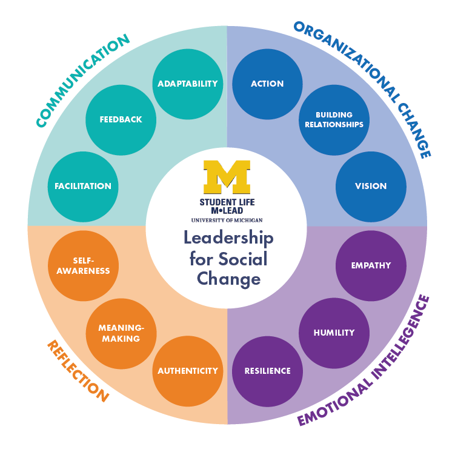
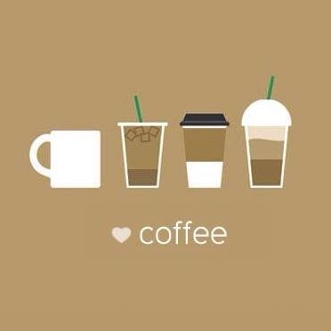

Jubian is a cross-cultural grocery delivery App that hopes to
connect people all over the
globe through our common love for food.
As a foodie myself, I'm super pumped to be part of the software developer team. My team and I are
always
coming up
with
new ideas and striving to
create better user experience.

M-LEAD serves to provide students at the University of
Michiganwith with information about leadership education on
campus.
As the program assistant, I am in charge of maintaining and updating the website, and I am always
thinking about how I can make the website more informative and eye-catching.
During the summer of 2019, I adventured to New York City and
attended a bootcamp there for 10 weeks.
I learned many modern programming technologies and built several hands-on projects
along the way. It was also
during the intense learning process that I confirmed I do enjoy coding:)

I am a huge coffee lover, but I find myself stop trying new coffee
shops once I know a good one in
the city.
So I came up with and wrote from scratch a coffee shops finding/recommendation app that also
serves as a platform for
coffee lovers to build our communities and learn more
about coffee.
To be continued...